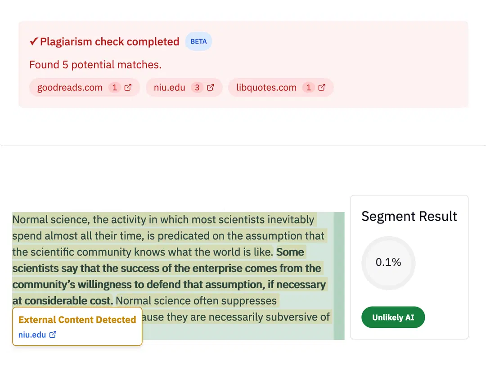

Prodotto
Controllo antiplagio e IA
Rileva immediatamente i casi di plagio tradizionale e i contenuti esterni.
Non c'è dubbio: "Il grande Gatsby" è uno dei romanzi più intramontabili di tutti i tempi. A un secolo dalla sua pubblicazione, il breve romanzo di F. Scott Fitzgerald su un milionario misterioso e afflitto da un amore non corrisposto, che vive e muore in una villa a Long Island, è tra le opere di narrativa americana più lette.
Ma quali sono gli elementi che contribuiscono a questa eredità? Sono forse le immagini vivide, i personaggi avvincenti e la trama dai colpi di scena incessanti? Oppure è la critica sottile ma spietata degli ideali americani che tutti diamo per scontati? Diversi altri simboli del progresso americano – la ricchezza, la ricerca scientifica, la metropoli – si rivelano forze corruttrici in Il grande Gatsby.
In questo saggio analizzeremo le complesse e intrecciate sfumature culturali che contribuiscono alla perennità dell'opera fondamentale di Fitzgerald...
Sintesi dei contenuti esterni
A un secolo dalla sua pubblicazione, il breve romanzo di F. Scott Fitzgerald su un misterioso milionario afflitto da mal d'amore che vive e muore in una villa di Long Island è tra le opere di narrativa americana più lette.
Diversi altri simboli del progresso americano — la ricchezza, la ricerca scientifica, la metropoli — si rivelano essere forze corruttrici ne *Il grande Gatsby*.
Come funziona il controllo antiplagio di Pangram?
Rilevamento immediato dei plagi
Carica il tuo testo sulla dashboard di Pangram e attiva la funzione di rilevamento del plagio.
Analisi completa
Pangram confronterà il tuo testo con miliardi di pagine web, libri, articoli di cronaca e altro ancora per individuare eventuali corrispondenze con contenuti esterni. Quando viene individuata una corrispondenza esatta, Pangram la segnalerà affinché tu possa verificarla. Pangram analizzerà inoltre il tuo testo alla ricerca di contenuti generati dall'intelligenza artificiale e di frasi tipiche dell'IA.
Ottieni un rapporto dettagliato in pochi minuti
Infine, Pangram fornirà un rapporto dettagliato contenente informazioni sulle origini del testo che hai inviato, che potrai condividere e scaricare.
Verifica contemporaneamente la presenza di plagio e di testi generati dall'intelligenza artificiale
Pangram è in grado di analizzare il tuo testo alla ricerca di contenuti generati dall'intelligenza artificiale e di plagi allo stesso tempo, così potrai essere certo che il tuo testo sia privo di plagi e completamente originale.
Il nostro strumento di rilevamento dell'IA funziona con i più recenti modelli linguistici basati sull'intelligenza artificiale di Claude, Gemini e ChatGPT; grazie a test e aggiornamenti regolari del software, garantisce la facile individuazione anche dei casi più sofisticati di plagio generato dall'IA, con un'accuratezza che raggiunge il 99%.
Il nostro strumento funziona in diverse lingue sia per il rilevamento dell'IA che per i controlli antiplagio, per chi desidera individuare la presenza di contenuti generati dall'IA in testi non in lingua inglese.
Combinando il controllo antiplagio con il rilevatore basato sull'intelligenza artificiale, avrai nuovamente il pieno controllo sulla verifica dell'originalità dei contenuti.
A chi è rivolto il rilevatore di plagio?
Il nostro rilevatore di plagio basato sull'intelligenza artificiale è pensato per chiunque desideri verificare la paternità di un testo e accertarsi che sia originale, tra cui:
- Docenti: Pangram aiuta i docenti a verificare i compiti consegnati dagli studenti per assicurarsi che le informazioni non siano state copiate direttamente da fonti esistenti. Ciò può contribuire a rafforzare la fiducia, la comunicazione e l'equità nella valutazione.
- Moderatori dei contenuti: verifichiamo che i contenuti, tra cui recensioni, post sui blog, contenuti sui social media e altro ancora, non contengano plagio, al fine di rafforzare la fiducia degli utenti.
- Editori: il nostro strumento antiplagio aiuta gli editori a analizzare i contenuti di lunga durata per garantire che siano conformi alle leggi in materia di violazione della proprietà intellettuale.

Qual è la differenza tra il plagio tradizionale e il plagio generato dall'intelligenza artificiale?
Il plagio tradizionale consiste nel copiare direttamente contenuti da altre fonti senza le citazioni o i riferimenti dovuti. È più facile da individuare, poiché gran parte del testo plagiato si ritrova parola per parola nel testo originale.
Il plagio generato dall'intelligenza artificiale può essere più difficile da individuare. Il contenuto potrebbe limitarsi a riprodurre solo poche righe del testo originale, oppure l'autore potrebbe creare un nuovo testo utilizzando strumenti basati sull'intelligenza artificiale, come ChatGPT o Gemini, e spacciarlo per proprio.
Ecco perché gli strumenti di rilevamento del plagio basati sull'intelligenza artificiale, come quelli di Pangram, sono fondamentali per verificare i lavori che potrebbero contenere contenuti generati dall'intelligenza artificiale.
Si integra perfettamente nei flussi di lavoro
Il nostro strumento di controllo antiplagio può essere utilizzato su diverse piattaforme digitali per ottimizzare il flusso di lavoro. Scopri le integrazioni del nostro software, tra cui:
- Canvas: la nostra estensione per Canvas esegue automaticamente il nostro strumento di controllo antiplagio in background mentre lavori al tuo ultimo progetto, per aiutarti a garantire l'originalità del tuo lavoro anche durante i ritmi di lavoro più frenetici.
- Google Classroom: il nostro strumento di controllo antiplagio può essere utilizzato anche su Google Classroom per valutare in modo rapido ed efficace l'originalità dei compiti consegnati dagli studenti.
Opzioni di prezzo flessibili
in base alle vostre esigenze di rilevamento dell' e tramite IA.
Il nostro rilevatore di plagio basato sull'intelligenza artificiale è pensato per chiunque desideri verificare la paternità di un testo e accertarsi che sia originale, tra cui:
Il controllo antiplagio di Pangram è disponibile su richiesta per gli utenti a pagamento, con diverse fasce di prezzo per soddisfare le vostre esigenze in materia di rilevamento tramite IA.
Scegli tra la nostra gamma di piani modulabili pensati per privati, professionisti, istituti scolastici, sviluppatori e aziende.
Ogni piano supporta un elevato numero di scansioni basate sull'intelligenza artificiale, funzionalità e integrazioni per facilitare un flusso di lavoro dinamico.
Perché affidarsi a Pangram?
La missione di Pangram è quella di ricostruire la fiducia in un contesto caratterizzato dalla crescente diffusione dei modelli di IA generativa. Il nostro strumento di rilevamento dei plagi consente di identificare i testi plagiati e di ripristinare la fiducia degli utenti.
Sviluppato da un team di ricercatori nel campo dell'intelligenza artificiale provenienti da Stanford, Tesla e Google, testiamo e ritestiamo costantemente il nostro software, fornendo aggiornamenti regolari per stare al passo con i nuovi e innovativi generatori di contenuti basati sull'intelligenza artificiale: in questo modo, avrai sempre accesso a una tecnologia di rilevamento dell'IA all'avanguardia.
Ecco perché gli strumenti di rilevamento del plagio basati sull'intelligenza artificiale, come quelli di Pangram, sono fondamentali per verificare i lavori che potrebbero contenere contenuti generati dall'intelligenza artificiale.
Sì, esistono diversi tipi di plagio tradizionale, come ad esempio:
- Plagio diretto: quando si copia direttamente un testo da un'altra fonte senza citarne correttamente la fonte.
- Plagio a mosaico: quando si mescolano frasi o idee tratte dall'opera di qualcun altro con il proprio lavoro senza citarne correttamente la fonte.
- Auto-plagio: quando si riutilizza un proprio lavoro già presentato in precedenza senza autorizzazione o senza citare adeguatamente la fonte.
Oggi esiste anche il plagio generato dall'intelligenza artificiale. Si verifica quando qualcuno pubblica come proprio un contenuto generato da un modello di linguaggio di grandi dimensioni (LLM). In questi casi, ciò potrebbe significare che l'autore ha involontariamente plagiato contenuti già esistenti o che ha semplicemente cercato di spacciare per originale un testo generato dall'intelligenza artificiale.
Pangram consente di individuare contemporaneamente sia il plagio generato dall'intelligenza artificiale sia il plagio tradizionale.
Altri articoli dei nostri esperti di IA
Scopri le ultime novità e le tendenze in materia di plagio nell'ambito dell'intelligenza artificiale.
- Come raccogliere prove per un caso di rilevamento tramite IA
- Grammarly utilizza l'intelligenza artificiale per aiutare gli studenti a scrivere
- Cosa fare quando uno studente presenta un lavoro realizzato con l'intelligenza artificiale
- Perché gli insegnanti hanno ancora bisogno di strumenti di rilevamento basati sull'intelligenza artificiale
- Linee guida utili sull'intelligenza artificiale